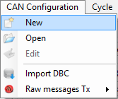

As we saw in the previous section, a CAN configuration contains description of CAN messages and parameter for a single CAN bus.
In the CANStream world, a CAN bus is considered as a Peak PCAN-USB adapter. One CAN bus = one PCAN-USB.
Since CANStream can handle up to eight PCAN-USB adapters, it can run simultaneously up to eight CAN configurations. Those multiple configurations (or buses) can be grouped in a single file in order to have the user configuring its buses once and using and reusing them with a simple command.
To create a multiples buses CAN configuration, click on the ‘CAN Configuration' menu of the menu strip and then click on ‘New'.

The CAN configuration editor should appear as bellow.

Click the 'New CAN bus controller' button to create a new CAN Bus.
Then, add messages and parameters using the same method you would use for a single bus configuration.
You don't need to create such configuration from scratch. You can open  an existing single bus configuration or import a DBC file
an existing single bus configuration or import a DBC file  first and then create all buses on the top of it. On the 'New CAN bus controller' button click, CANStream will automatically create a fist CAN bus for existing messages and then create a second CAN bus in which you can add messages and parameters.
first and then create all buses on the top of it. On the 'New CAN bus controller' button click, CANStream will automatically create a fist CAN bus for existing messages and then create a second CAN bus in which you can add messages and parameters.

In multiple CAN buses mode, each bus is represented in the configuration tree view by the bus controller icon  . Then CAN messages of a bus become child nodes (or branches) of the CAN bus.
. Then CAN messages of a bus become child nodes (or branches) of the CAN bus.
Multiple Buses CAN configuration file has a specific extension (*.mcb). Use standard 'Save CAN configuration' button  to save your multiple buses configuration, CANStream will automatically switch to the '*.mcb' extension.
to save your multiple buses configuration, CANStream will automatically switch to the '*.mcb' extension.
When you are using the 'Open CAN configuration' command , the file opening dialog has two file extension filters: '*.xcc' for single bus configuration and '*.mcb' for multiple buses configuration. Just switch to the '*.mcb' extension to open a multiple buses configuration and load it into the CAN configuration edition form.

Created with the Personal Edition of HelpNDoc: Free EPub and documentation generator